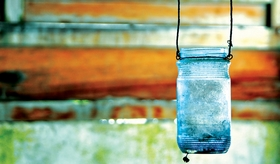
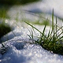
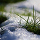
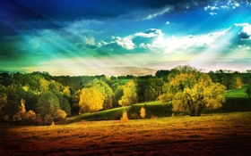
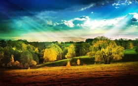

Crearea unui Terarium .
Un terariu este, prin definitie, o gradina aflata sub sticla. Aceasta tehnica era foarte populara in perioada victoriana si acum se pare ca incepe sa castige din ce in ce mai mult teren. Astfel se pot recrea tot felul de "peisaje", de la terenuri impadurite, pana la un mini desert sau o jungla tropicala. Mai mult, daca adaugati si animale sau insecte, gradina in miniatura va deveni un vivariu.
Crearea unui terariu este un proiect interesant si foarte educativ in acelasi timp, pentru ca ilustreaza foarte clar modul in care functioneaza un ecosistem. Un terariu este un ecosistem inchis - asemenea planetei noastre, dar la o scara mult mai mica. In interiorul peretilor de sticla au loc si interactioneaza multe procese diferite: fotosinteza, respiratia si ciclul apei in natura..
Afla mai mult .

Seara estea vremea romanticilor si a criminalilor .
Mama cu tata plecasera la bunicii mei , iar fratele meu intr-o tabara de Camping.Eram singura intr-o casa asa de mare..Vantul batea tare trantind ramele ferestrelor , deodata speriata am inchis toate ferestrele si toate usile. O liniste se lasa in toata casa , chiar si in sufletul meu .
Atipeam..deodata se auzi un ciocanit in usa..Panicata sar repede din fotoliu , trantind bolul cu floricele si cioolata calda pe covorul cel nou al mamei. Ma apropii de usa , purtand bo t os ii pufosi de la bunica mea . Deschid usa incet ..deodata un baiat inalt , cu niste ochi albastri frumosi , cu parul blond dat peste fata , cu niste pantaloni de trening albi si un maieu alb . Era chiar fostul meu iubit..
Afla mai mult .

Flori otravitoare .
Narcisa , Aceşti minunaţi vestitori ai primăverii, galbeni (aka daffodils) şi albi (jonquils), sunt, de fapt, toxici în cazul consumării bulbilor în cantităţi mari. De multe ori, oamenii confundă bulbii de narcise cu ceapa. Semnele de intoxicaţie sunt: greaţă, vome, crampe şi diaree. Un medic ar putea recomanda hidratare intravenoasă şi / sau medicamente pentru a stopa voma şi senzaţia de greaţă în cazul în care simptomele sunt severe sau pacientul este un copil.
Afla mai mult .
Photos Box


 

 

Turism
Oferim locuitorilor și oaspeților o mulțime de atracții turistice ale țării noastre, precum și multe alte lucruri, care vor face odihna în Moldova nu doar interesantă, ci, de asemenea, cu adevărat memorabilă.
Afla mai mult .

Programul de Securitate Cibernetică
Ministerul Tehnologiei Informației și Comunicațiilor, în comun cu autoritățile de profil, a elaborat Programul național al securității cibernetice a Republicii Moldova. Documentul a fost adoptat prin Hotărârea de Guvern nr. 811 din 29 octombrie 2015.
Documentul are la bază prevederile Strategiei Naționale de dezvoltare a societății informaționale "Moldova Digitală 2020" și a Strategiei securităţii naţionale a Republicii Moldova.
Afla mai mult .